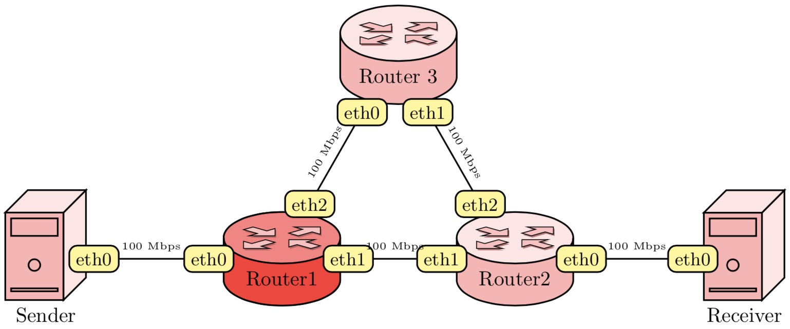

Language: latex
\documentclass{article}
\usepackage{network}
\usepackage{pgfplots}
\usetikzlibrary{positioning, patterns}
\begin{figure}
\centering\resizebox{\textwidth}{!}{
\begin{tikzpicture}[node distance=4cm]
\node (S1){\server{Sender}};
\node[right of=S1] (R1){\router{Router1}};
\node[right of=S1] (R1){\router{Router1}[true]};
\node[right of=R1] (R2){\router{Router2}};
\node[right of=R2] (S2){\server{Receiver}};
\node[yshift=3.5cm] at ($ (R1) !.5! (R2) $) (R3) {\router{Router 3}};
\draw[thick] (S1) -- node[ethernet, at start]{eth0} node[ethernet, at end] {eth0} (R1) node[speed, midway] {100 Mbps};
\draw[thick] (R1) -- node[ethernet, at start]{eth1} node[ethernet, at end] {eth1} (R2) node[speed, midway] {100 Mbps};
\draw[thick] (R1) -- node[ethernet, at start]{eth2} node[ethernet, at end] {eth0} (R3) node[speed, midway] {100 Mbps};
\draw[thick] (R2) -- node[ethernet, at start]{eth2} node[ethernet, at end] {eth1} (R3) node[speed, midway] {100 Mbps};
\draw[thick] (R2) -- node[ethernet, at start]{eth0} node[ethernet, at end] {eth0} (S2) node[speed, midway] {100 Mbps};
\end{tikzpicture}
}
\caption{Complicated Topology}
\end{figure}
\end{document}
\ProvidesPackage{network}[2016/02/06 v1.0 macros for drawing network components]
\RequirePackage{xargs}
\RequirePackage{tikz}
\RequirePackage{xifthen}
\usetikzlibrary{shapes,calc, shadows}
\tikzset{
interface/.style={draw, rectangle, rounded corners, font=\small},
ethernet/.style={interface, fill=yellow!50},
speed/.style={sloped, anchor=south, font=\tiny},
router_arrow/.style={draw, shape=single arrow, single arrow head extend=4mm,
minimum height=1.3cm, minimum width=1.8mm, black, fill=red!25,
drop shadow={opacity=.8, fill=red!30!gray, shadow yshift=-0.3mm, shadow xshift=0.2mm}, font=\tiny}
}
\newcommand*{\shift}{1.1cm}
\newcommandx*{\router}[2][2=false]{
\begin{tikzpicture}
\ifthenelse{\equal{#2}{false}}{
\node[cylinder,
draw=black,
thick,
aspect=0.6,
minimum height=1.4cm,
minimum width=2.0cm,
shape border rotate=90,
cylinder uses custom fill,
cylinder body fill=red!30,
cylinder end fill=red!10] (R) {#1};
}{
\node[cylinder,
draw=black,
thick,
aspect=0.6,
minimum height=1.4cm,
minimum width=2.0cm,
shape border rotate=90,
cylinder uses custom fill,
cylinder body fill=red!80,
cylinder end fill=red!50] (R) {#1};
}
\begin{scope}[scale=0.5, yscale=0.28, transform shape]
\node[router_arrow, rotate=45, xshift=\shift] at ($(R.before top)!0.5!(R.after top)$) {\strut};
\node[router_arrow, rotate=-45, xshift=-\shift] at ($(R.before top)!0.5!(R.after top)$) {\strut};
\node[router_arrow, rotate=-135, xshift=\shift] at ($(R.before top)!0.5!(R.after top)$) {\strut};
\node[router_arrow, rotate=135, xshift=-\shift] at ($(R.before top)!0.5!(R.after top)$) {\strut};
\end{scope}
\end{tikzpicture}
}
\newcommand*{\server}[1]{
\begin{tikzpicture}
\pgfmathsetmacro{\cubex}{1}
\pgfmathsetmacro{\cubey}{1.5}
\pgfmathsetmacro{\cubez}{1}
\draw[black, thick, fill=red!30] (0,0,0) -- ++(-\cubex,0,0) -- ++(0,-\cubey,0) -- ++(\cubex,0,0) -- cycle;
\draw[black, thick, fill=red!10] (0,0,0) -- ++(0,0,-\cubez) -- ++(0,-\cubey,0) -- ++(0,0,\cubez) -- cycle;
\draw[black, thick,fill=red!10] (0,0,0) -- ++(-\cubex,0,0) -- ++(0,0,-\cubez) -- ++(\cubex,0,0) -- cycle;
\draw[black, thick, fill=red!30] (-0.1,-0.1,0) -- ++(-0.8*\cubex,0,0) -- ++(0,-0.3,0) -- ++(0.8*\cubex,0,0) -- cycle;
\draw[black, thick, fill=red!30] (-0.1,-1.3,0) -- ++(-0.8*\cubex,0,0) -- ++(0,-0.05,0) -- ++(0.8*\cubex,0,0) -- cycle;
\filldraw[black, thick, fill=red!30] (-0.5*\cubex,-0.9) circle (0.1);
\node[anchor=north, align=center] at (-0.3*\cubex,-\cubey) {#1};
\end{tikzpicture}
}
Acknowledgement: @Junxue Zhang